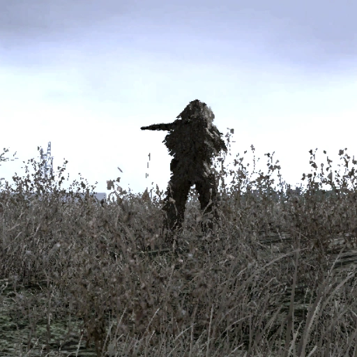
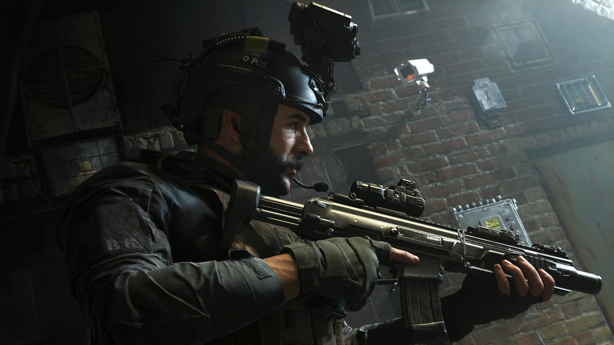

Mejores misiones cumplidas

Operación Ultimátum
El equipo se lanza en paracaídas hasta el punto de partida. El equipo se dá cuenta de que Griggs no está, por lo que se dirigen hacia un pueblo cercano. De camino al pueblo, el jugador debe eliminar las patrullas enemigas que se avecinan hasta llegar a la primera casa. Ahí, Price asesina a un soldado. Soap debe verificar la casa, donde debe matar a dos soldados, pero Griggs no estará ahi y el jugador tendrá que ir a otra casa, pero al salir habrá un par de soldados y por lo que debe liquidarlos con la M4A1 sin alertar al resto, despues entrará a la casa y se podrá escuchar que un oficial interroga a Griggs, es ahi donde Soap lo salva. Luego, hay que dirigirse al complejo. En el camino, Soap recibirá un mensaje de otro escuadrón para destruir la torre de energia, tratando de evitar el lanzamiento, pero los ultranacionalistas usarán una planta alterna, por lo que no quedará otra mas que entrar. Durante camino, el equipo luchará contra un par de enemigos. Luego de pasar por el bloque de edificios nos reuniremos en el equipo estadounidense de francotiradores y entraremos justo cuando los misiles son lanzados.
Mas misiones hechas
Operación: "Todos camuflajeados"
La mision comienza con MacMillan en cuerpo a tierra y Price agachando vigilando el terreno, Price da la señal de que pueden seguir su mision, MacMillan corriendo por delante de el llegan hasta una caseta de chapas(probablemente un galpon para almacenar objetos), al pasar por dentro MacMillan se posiciona en la entrada y nos avisara de una patrulla enemiga de 2 soldados, MacMillan y Price se agachan y luego van al suelo, mientras Price elimina a un soldado mientras el otro no mira MacMillan eliminara al otro, luego de asesinarlos ellos dos salen corriendo hasta el proximo galpon de mas delante en lo que MacMillan dice que si rodean ese galpon tendran mas cobertura, MacMillan se pegara junto a la ventana y dira que no ataques a los tangos de dentro(4 Soldados y 3 Perros), al cabo de evitarlos MacMillan avanza hacia el otro extremo, por la salida trasera de la casa ahi nos avisara de que un enemigo acaba de salir podremos elegir si matarlo o dejarlo vivir, luego de elegir entre esas 2 opciones Mac y Price se cubren tras un coche, luego siguen avanzando al saltar una cerca MacMillan divisa a un vigía en la torre cuadrada de la iglesia y a un soldado tras un coche, necesitaremos acercarnos mas, nos cubriremos tras un segundo arbol, puedes elegir si matas al francotirador o al soldado tras el coche, si matas al francotirador iras sin problemas, pero si matas al otro soldado primero, puede que el francotirador divise el cuerpo y alerte a los perros y los soldados que están en la casa anterior, por lo que iran detras tuyo. Es mejor matarlos en este orden:
1-Francotirador
2-Soldado tras el vehiculo
Aunque se puede matar primero al soldado que está abajo sin que el vigía vea el cuerpo. Para esto, hay que matar al soldado tan pronto como apareza luego de que MacMillan y Price (el jugador) salten la cerca. Debe ser lo más pronto y rápido posible. Así el cuerpo quedará en un punto que está fuera del alcance de la vista del vigía.
Operación: "Fortaleza"
Luego de que la unidad 22 escapa en los camiones en la misión anterior, empiezan a ser perseguidos por los ultranacionalistas. Gaz, Price, Soap y Griggs son perseguidos de cerca pero Soap los elimina. Después de un tiempo, aparece un Hind que esta disparando a los vehículos. El Hind se aleja y dispara a un puente, haciendo que la unidad caiga por el. Gaz, Griggs, Price, Soap y otros marines sobreviven y se enfrentan a los enemigos en los restos del puente. Al no poder recibir apoyo de los británicos, los SAS (Price, Soap y Gaz) y los marines (Griggs y otros 3) luchan solos pero entonces Kamarov llama por radio, anunciando que se acerca a la zona para recibir apoyo. Antes de que lleguen los rusos, el Hind explota un tanque de gasolina que estaba detrás de los chicos, noqueándolos. Soap se despierta y es protegido por Griggs. Griggs no pudo combatirlos solo y es asesinado. Price se encontraba moribundo a unos metros y Gaz estaba en medio de la carretera con otros dos marines. Zakhaev aparece en el puente con dos guardias. Los guardias eliminan a los dos marines inconscientes y Zakhaev mata a Gaz. Antes de que llegaran a Price y Soap, un helicóptero ruso destruye el Hind y empiezan a disparar. Aprovechando la distracción, Price le pasa a Soap una M1911. Soap apunta a sus enemigos y mata a los guardias y a Zakhaev. Los rusos descienden en el puente y Kamarov ayuda a Soap para recibir apoyo medico. Los patriotas empiezan a subir a Soap a un helicóptero. Mientras subía, Soap ve como aparentemente en vano, un patriota trataba de reanimar a Price. En el trayecto, Soap pierde la consciencia.